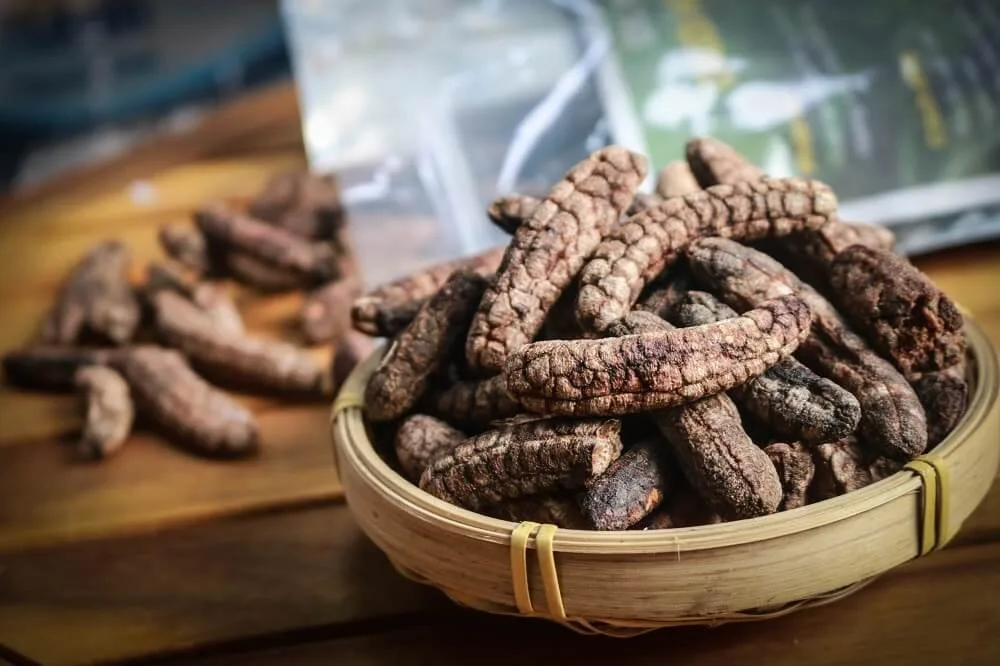
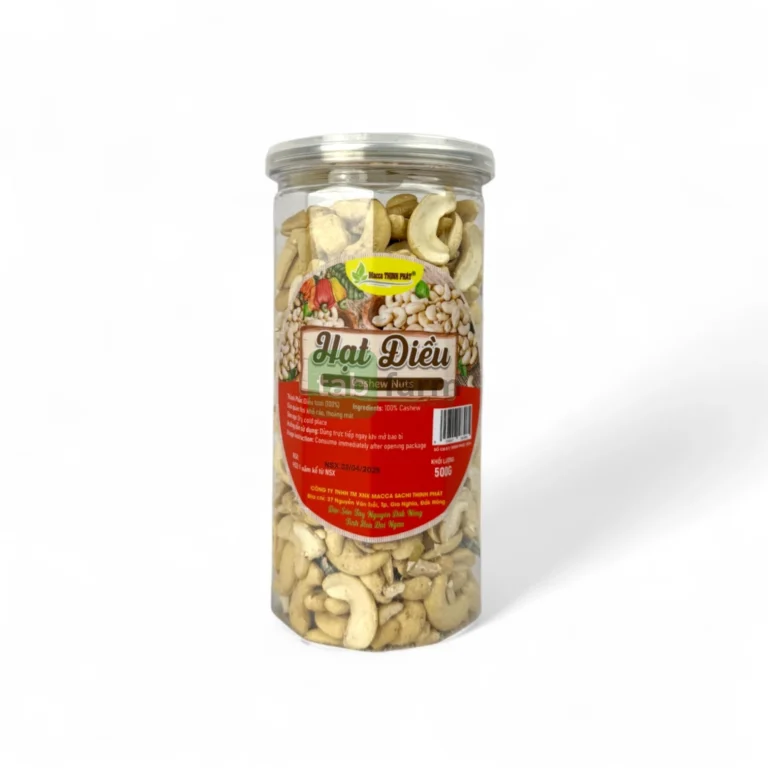
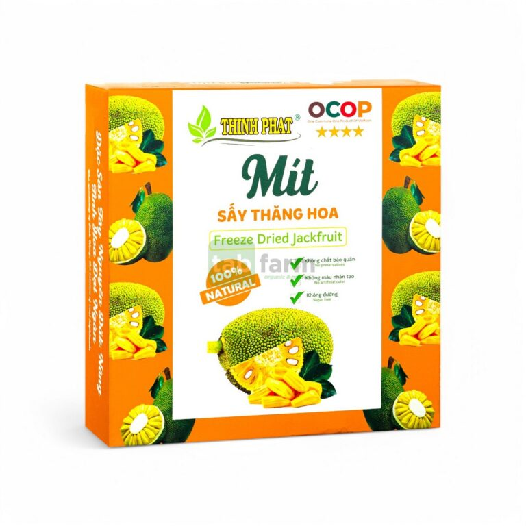

Bơ 034
Bơ sáp béo dẻo, hái trực tiếp từ vườn theo đơn đặt hàng.
39.000 VNĐ / 1KgToàn bộ đặc sản Tây Nguyên đang được phân phối: trái cây, hạt sấy khô, gia vị và các sản phẩm khác - nguồn gốc rõ ràng, thu hoạch theo đơn.
Bơ sáp béo dẻo, hái trực tiếp từ vườn theo đơn đặt hàng.
39.000 VNĐ / 1Kg
Chuối rừng sấy nguyên trái, vị ngọt tự nhiên, dai bùi đặc trưng.
500.000 VNĐ / 1Kg
Hạt điều rang giòn, ướp muối vừa ăn, không dùng chất bảo quản.
200.000 VNĐ / Hộp
Mắc ca nứt vỏ sẵn, nhân béo bùi, thu hoạch tại nông trại Tây Nguyên.
300.000 VNĐ / 1Kg
Măng rừng phơi khô tự nhiên, giữ trọn vị đậm đà đặc trưng núi rừng.
400.000 VNĐ / 1Kg
Mật ong nguyên chất khai thác từ rừng nguyên sinh, không pha tạp.
600.000 VNĐ / 1L
Mít sấy giữ nguyên hương vị và dinh dưỡng nhờ công nghệ sấy thăng hoa.
250.000 VNĐ / 1Kg
Hạt tiêu đỏ chín cây, cay nồng, thơm đặc trưng đất đỏ bazan.
80.000 VNĐ / Lọ